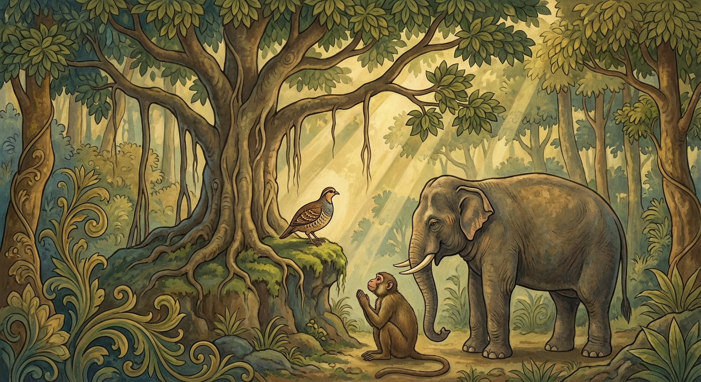

7. තිත්තිර ජාතකය (37)
“යෙ වුඩ්ඪමපචායන්තී” (යමෙක් වැඩිහිටියන් පුදත් ද) යන මේ ජාතක කථාව බුදුරජාණන් වහන්සේ සැවැත් නුවර බලා වඩින අතරතුර, සැරියුත් තෙරුන් වහන්සේට සෙනසුනක් අහිමි වීම අරබයා දේශනා කරන ලදී. අනේපිඬු මහ සිටුවරයා විසින් විහාරය කරවා දූතයන් යැවූ කල්හි, බුදුරජාණන් වහන්සේ රජගහ නුවරින් නික්ම විශාලා මහනුවරට වැඩම කොට, එහි කැමති තාක් කල් වැඩ සිට “සැවැත් නුවරට යන්නෙමි” යි මඟට පිළිපන් සේක. එකල්හි ඡබ්බග්ගිය (සවග) භික්ෂූන්ගේ අතවැසියෝ පෙරටුව ගොස්, තෙරවරුන් සෙනසුන් ගැනීමටත් මත්තෙන්, “මේ සෙනසුන අපගේ උපාධ්යායන් වහන්සේට ය, මෙය ආචාර්යන් වහන්සේට ය, මෙය අපට ම වන්නේ ය” යි කියමින් සෙනසුන් වෙන් කර ගත්හ. පසුව පැමිණි තෙරවරුන්ට සෙනසුන් නොලැබුණි. සැරියුත් තෙරුන්ගේ අතවැසියෝ ද තෙරුන් වහන්සේ සඳහා සෙනසුනක් සොයන්නාහු එය නොලැබූහ. සැරියුත් තෙරුන් වහන්සේ සෙනසුනක් නොලැබ, බුදුරජාණන් වහන්සේගේ සෙනසුනට නුදුරු ගසක් මුල සක්මන් කිරීමෙන් හා වැඩ සිටීමෙන් රාත්රිය ගත කළ සේක. අලුයම් කාලයෙහි බුදුරජාණන් වහන්සේ නික්ම උගුර පෑදූ සේක. තෙරුන් වහන්සේ ද උගුර පෑදූ සේක. “එතැන කවුරුන් ද?” යි බුදුරදුන් විමසූ විට, “ස්වාමීනි, මම සාරිපුත්ත වෙමි” යි පිළිතුරු දුන්හ. “සාරිපුත්ත, මේ වේලාවේ මෙහි කුමක් කරන්නේ ද?” යි විමසූ කල, තෙරුන් වහන්සේ සියලු පුවත දැන්වූහ. බුදුරජාණන් වහන්සේ තෙරුන්ගේ කථාව අසා, “දැන් මා ජීවත්ව සිටියදී ම භික්ෂූන් ඔවුනොවුන් කෙරෙහි ගෞරවයක් හෝ කීකරුකමක් නැතිව වාසය කරති; මා පිරිනිවී කල්හි කුමක් කරත් ද?” යි සිතා ධර්ම සංවේගය උපදවා ගත් සේක.
එම රාත්රිය ගෙවුණු පසු බුදුරජාණන් වහන්සේ භික්ෂු සංඝයා රැස් කරවා, “මහණෙනි, සවග මහණුන් පෙරටුව ගොස් තෙරවරුන්ට සෙනසුන් ලැබීම වළක්වන බව සැබෑ ද?” යි විමසූ සේක. “එසේය ස්වාමීනි, සත්යයකි” යි භික්ෂූහු පිළිතුරු දුන්හ. ඉක්බිති බුදුරජාණන් වහන්සේ සවග මහණුන්ට දොස් පවරා, දැහැමි කථාවක් කොට භික්ෂූන් ඇමතූ සේක. “මහණෙනි, කවරෙක් අග්ර ආසනයට, අග්ර ජලයට සහ අග්ර ආහාරයට සුදුසු වන්නේ ද?” එවිට භික්ෂූහු තම තමන්ගේ රුචිය පරිදි මෙසේ පිළිතුරු දුන්හ:
- ක්ෂත්රිය කුලයෙන් පැවිදි වූවන් සුදුසු යැයි ඇතැමෙක් කීහ.
- බ්රාහ්මණ කුලයෙන් හා ගෘහපති කුලයෙන් පැවිදි වූවන් සුදුසු යැයි ඇතැමෙක් කීහ.
- විනයධරයන් හා ධර්ම කථිකයන් සුදුසු යැයි තව කෙනෙක් කීහ.
- ප්රථම, ද්විතීය, තෘතීය හා චතුර්ථ ධ්යාන ලාභීන් සුදුසු යැයි තවත් කෙනෙක් කීහ.
- සෝවාන්, සකදාගාමී, අනාගාමී, අරහත් යන මාර්ග ඵල ලාභීන්, ත්රිවිද්යා ලාභීන් හා ෂඩ් අභිඥා ලාභීන් සුදුසු යැයි තවත් අය කීහ.
මෙසේ භික්ෂූන් අග්ර ආසනාදියට සුදුස්සන් ප්රකාශ කළ කල්හි බුදුරජාණන් වහන්සේ මෙසේ වදාළ සේක: “මහණෙනි, මාගේ ශාසනයෙහි අග්ර ආසන ආදිය ලැබීමට ක්ෂත්රිය, බ්රාහ්මණ, ගෘහපති කුලවලින් පැවිදි වීම පමණක් හෝ, විනයධර, සූත්රධර, අභිධර්මධර වීම හෝ, ප්රථම ධ්යානාදිය ලැබීම හෝ, සෝවාන් ආදී මාර්ග ඵල ලැබීම හෝ ප්රමාණවත් නොවේ. මහණෙනි, මේ ශාසනයෙහි වැඩිමහලු පිළිවෙළ අනුව වැඳීම, දැක හුනස්නෙන් නැගිටීම, ඇඳිලි බැඳීම, ගරු බුහුමන් දැක්වීම කළ යුතු ය. අග්රාසන, අග්රෝදක, අග්රපිණ්ඩ (හොඳම අසුන, පැන් සහ ආහාර) වැඩිමහල්ලාට ලැබිය යුතු ය. ශාසනයෙහි ප්රමාණය (සුදුසුකම) එය යි. එබැවින් සංඝයා අතරින් වැඩිමහලු භික්ෂුව මේවාට සුදුසු වේ. මහණෙනි, මේ සාරිපුත්ත තෙරණුවෝ මාගේ අග්ර ශ්රාවක ය, මා අනුව දම්සක් පවත්වන්නෝ ය. එබැවින් මට පසුව සෙනසුනක් ලැබීමට සුදුසු ම තැනැත්තා ඔහු ය. එහෙත් ඔහුට ඊයේ රාත්රියේ සෙනසුනක් නොලැබ රුක් මුලක රාත්රිය ගත කිරීමට සිදු විය. මහණෙනි, තොපි දැන්ම ම මෙසේ ගෞරව රහිතව, කීකරුකමකින් තොරව වසන්නහු නම්, කල් ගත වෙත් ම කුමක් කරමින් වසන්නහු ද?” ඉක්බිති බුදුරජාණන් වහන්සේ ඔවුනට අවවාද දෙනු පිණිස, “මහණෙනි, පෙර තිරිසන් සතුන් පවා ‘අප මෙසේ ඔවුනොවුන්ට අගෞරව කරමින්, කීකරු නොවී, අසමාන පැවතුම් ඇතිව විසීම අපට සුදුසු නැත; අප අතරින් වැඩිමහල්ලා කවරෙක්දැ යි දැන ඔහුට වැඳුම් පිදුම් ආදිය කරන්නෙමු’ යි මනාව විමසා බලා, වැඩිමහල්ලා හඳුනාගෙන, ඔහුට ගරු සත්කාර කරමින් මරණින් මතු දෙව්ලොව ගියහ” යි වදාරා අතීත කථාව ගෙනහැර දැක්වූ සේක.
අතීතයේ හිමාල ප්රදේශයේ එක් විශාල නුග ගසක් ඇසුරු කොට වටුවෙක් ද, වඳුරෙක් ද, ඇතෙක් ද යන මිතුරන් තිදෙනෙක් විසූහ. ඔවුහු ඔවුනොවුන්ට ගරු සරු නැතිව, කීකරු නැතිව, අසමාන ගති පැවතුම් ඇතිව විසූහ. ඉක්බිති ඔවුන්ට මෙසේ සිතුණි: “අප මෙසේ විසීම සුදුසු නොවේ. අප අතරින් වඩාත් වැඩිමහල්ලා කවරෙක් ද, ඔහුට වන්දනාමාන ආදිය කරමින් වසන්නෙමු.” “අපගේ වැඩිමහල්ලා කවුරුන් දැ” යි සිතන ඔවුහු දිනක්, “මේ සඳහා උපායක් ඇතැ” යි සිතා තිදෙනා ම නුග ගස මුල හිඳ ගත්හ. වටුවා සහ වඳුරා ඇතාගෙන් මෙසේ විමසූහ: “මිතුර ඇතාණෙනි, ඔබ මේ නුග ගස කොපමණ කලක සිට දන්නේ ද?” හෙතෙම, “මිතුරනි, මා කුඩා ඇත් පැටවකු කාලයේ මේ නුග පඳුර මගේ කලවා දෙක අතරින් යවා (ඉහළින්) ගමන් කරමි. මා එය පාගාගෙන සිටින විට එහි අග්ර ශාඛාව මාගේ නාභියෙහි ගැටෙයි. මෙසේ මම මේ ගස පඳුරක් ව පැවති කාලයේ සිට දනිමි” යි කීය. නැවත ඒ දෙදෙනා ම වඳුරාගෙන් ද පෙර පරිදි ම විමසූහ. වඳුරා පිළිතුරු දෙමින්, “මිතුරනි, මම කුඩා වඳුරු පැටවකු ව සිටි කාලයේ බිම ඉඳගෙන, ගෙල ඔසවන්නේ නැතිව ම මේ නුග පඳුරේ දළු කෑවෙමි. මෙසේ මම මේ ගස කුඩා පැළයක් ව තිබූ කාලයේ සිට දනිමි” යි කීය. අනතුරුව ඉතිරි දෙදෙනා පෙර පරිදි ම වටුවාගෙන් ද විමසූහ. වටුවා මෙසේ කීය: “මිතුරනි, පෙර අසවල් තැන විශාල නුග ගසක් විය. මම එහි ගෙඩි කා මෙම ස්ථානයේ වසුරු හෙළුවෙමි. මේ නුග ගස ඉන් හටගත්තේ ය. එබැවින් මම මේ ගස උපදින්නටත් පෙර සිට ම දනිමි. එනිසා මම ඔබ දෙදෙනාට ම වඩා වයසින් වැඩිමහල් වෙමි.”
මෙසේ කී කල්හි වඳුරා සහ ඇතා වටු පඬිතුමාට මෙසේ කීහ: “මිතුර, ඔබ අපට වඩා වැඩිමහල් ය. මෙතැන් පටන් අපි ඔබට ගරු සත්කාර, මානන, වන්දන, පූජන ද, දැක හුනස්නෙන් නැගිටීම ද, ඇඳිලි බැඳීම ද, සාමීචි කර්ම (සුදුසු වතාවත්) ද කරන්නෙමු. ඔබගේ අවවාදයෙහි පිහිටන්නෙමු. ඔබ ද මෙතැන් පටන් අපට අවවාද අනුශාසනා දුන මැනවි.” එතැන් පටන් වටුවා ඔවුන්ට අවවාද දුන්නේ ය; සීලයෙහි පිහිටුවීය. තමා ද සීලයෙහි පිහිටියේ ය. මෙසේ ඒ තිදෙනා පන්සිල්හි පිහිටා ඔවුනොවුන්ට ගරු සරු ඇතිව, කීකරු ව, සමාන පැවතුම් ඇතිව වාසය කොට ජීවිතාන්තයේ දී දෙව්ලොව උපන්හ. ඒ තිදෙනාගේ එම සමාදානය (එකමුතු හැසිරීම) “තිත්තිරිය බ්රහ්මචරිය” (වටු බඹසර) නමින් ප්රකට විය.

“මහණෙනි, මෙසේ තිරිසන් සතුන් පවා ඔවුනොවුන්ට ගරු සරු ඇතිව, කීකරුව විසූහ. ඔබලා මෙසේ මනාව දේශනා කළ (ස්වාක්ඛාත) ධර්ම විනය ඇති ශාසනයක පැවිදි වී, කුමක් නිසා ඔවුනොවුන්ට අගෞරව කරමින්, අකීකරුව වසන්නහු ද? මහණෙනි, මෙතැන් පටන් මම වැඩිමහලු පිළිවෙළ අනුව වැඳීම, දැක හුනස්නෙන් නැගිටීම, ඇඳිලි බැඳීම සහ සාමීචි කර්ම කිරීම ද; වැඩිමහලු පිළිවෙළ අනුව අග්රාසන, අග්රෝදක හා අග්රපිණ්ඩ පිළිගැන්වීම ද අනුදනිමි. මෙතැන් පටන් නවක භික්ෂුව විසින් වෘද්ධ භික්ෂුව සෙනසුනෙන් නොවැළැක්විය යුතු ය. යමෙක් වළක්වන්නේ නම් දුකුලා (දුක්කට) ඇවැතක් වන්නේ ය.” මෙසේ බුදුරජාණන් වහන්සේ මෙම ධර්ම දේශනාව ගෙනහැර දක්වා, බුද්ධත්වයෙන් අවබෝධ කරගත් පරිදි මෙම ගාථාව වදාළ සේක.
“ධර්මයෙහි දක්ෂ වූ (ගුණ නුවණින් යුතු) යම් නරයෝ වැඩිහිටියන්ට ගරු සත්කාර කරත් ද, ඔවුහු මේ ආත්මයේදී ම ප්රශංසාවට බඳුන් වෙති; පරලොව දී (මරණින් මතු) සුගතියට ද පැමිණෙති.”
එහි “යෙ වුඩ්ඪමපචායන්ති” යනු, ජාති වෘද්ධ (උපතින් උසස්), වයෝ වෘද්ධ (වයසින් වැඩි) සහ ගුණ වෘද්ධ (ගුණයෙන් උසස්) යනුවෙන් වැඩිහිටියෝ තිදෙනෙකි. ඔවුන් අතුරින් උසස් කුල ඇත්තෝ ‘ජාති වෘද්ධ’ නම් වෙති. වයසින් වැඩි වූවෝ ‘වයෝ වෘද්ධ’ නම් වෙති. ගුණයෙන් සම්පූර්ණ වූවෝ ‘ගුණ වෘද්ධ’ නම් වෙති. මේ අවස්ථාවේදී ගුණයෙන් හා වයසින් වැඩිහිටි වූවන් “වෘද්ධ” ලෙස අදහස් කෙරේ. “අපචායන්ති” යනු කුල දෙටුවන් පිදීමේ කර්මයෙන් පුදති යන්නයි. “ධම්මස්ස කොවිදා” යනු වැඩිහිටියන්ට සැලකීම නම් වූ ගුණ ධර්මයෙහි දක්ෂ වූ යන්නයි. “දිට්ඨෙව ධම්මෙ” යනු මේ අත් බවෙහි ම ය. “පාසංසා” යනු ප්රශංසාවට සුදුසු බවයි. “සම්පරායෙ ච සුග්ගති” යනු මෙම ලෝකය අතහැර යා යුතු වූ පරලොව දී ඔවුන්ට සුගතිය ම උරුම වෙයි. මෙහි පිණ්ඩිත අර්ථය මෙයයි: “මහණෙනි, ක්ෂත්රිය, බ්රාහ්මණ, වෛශ්ය, ශුද්ර වේවා, ගිහි හෝ පැවිදි වේවා, තිරිසන්ගත සතෙකු වේවා, යම් සත්වයෝ කුල දෙටුවන් පිදීමෙහි දක්ෂ වූවාහු, ගුණ සම්පන්න වූ සහ වයසින් වැඩිහිටියන්ට ගරු බුහුමන් කරත් ද, ඔවුහු මේ ආත්ම භාවයේ දී ‘වැඩිහිටියන් පුදන්නෝ’ යැයි ප්රශංසා සහ වර්ණනා ලබති; කය බිඳී මරණින් මතු ස්වර්ගයේ උපදිති.”
මෙසේ ශාස්තෲන් වහන්සේ වැඩිහිටියන් පිදීමේ ගුණය වදාරා, පූර්ව අපර සන්ධි ගළපා ජාතකය නිම කළ සේක. “එකල ඇත් රජු වූයේ දැන් මුගලන් තෙරුන් ය. වඳුරා වූයේ සැරියුත් තෙරුන් ය. වටු පණ්ඩිතයා වූයේ මම ම වෙමි.”
හත්වන වූ තිත්තිර ජාතක වර්ණනාව නිමියේ ය.